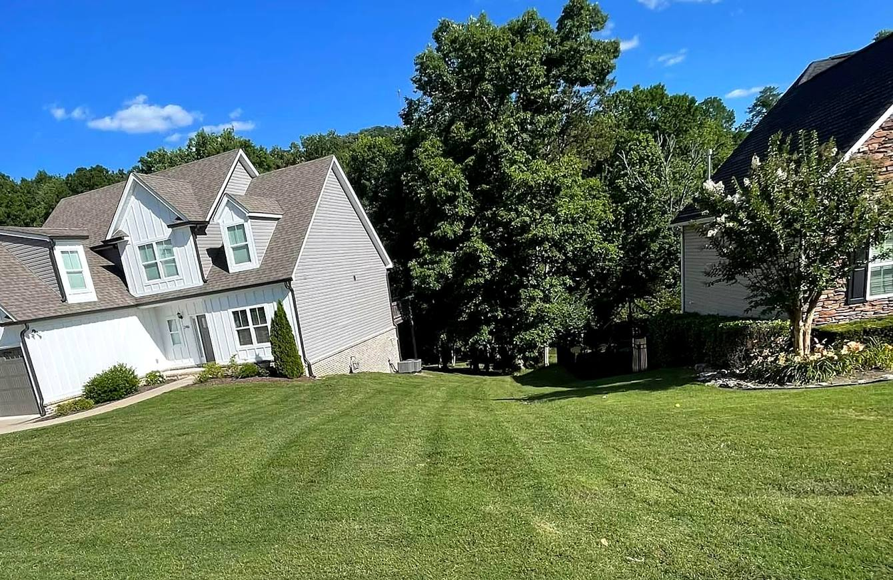
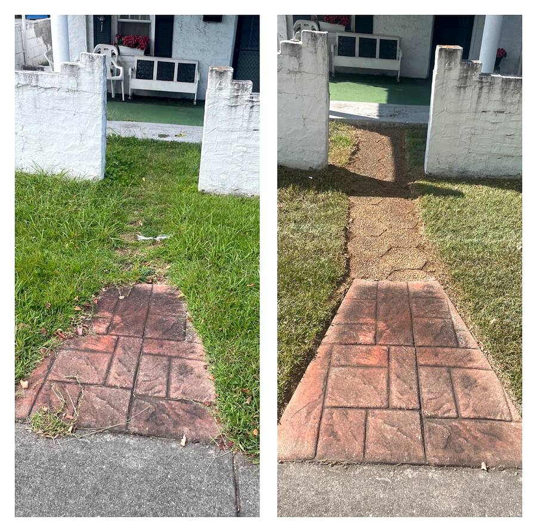
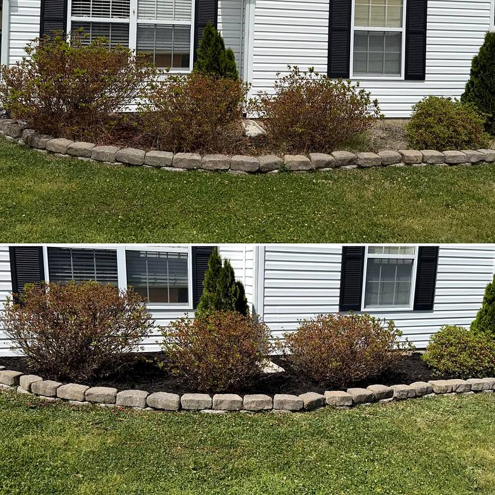
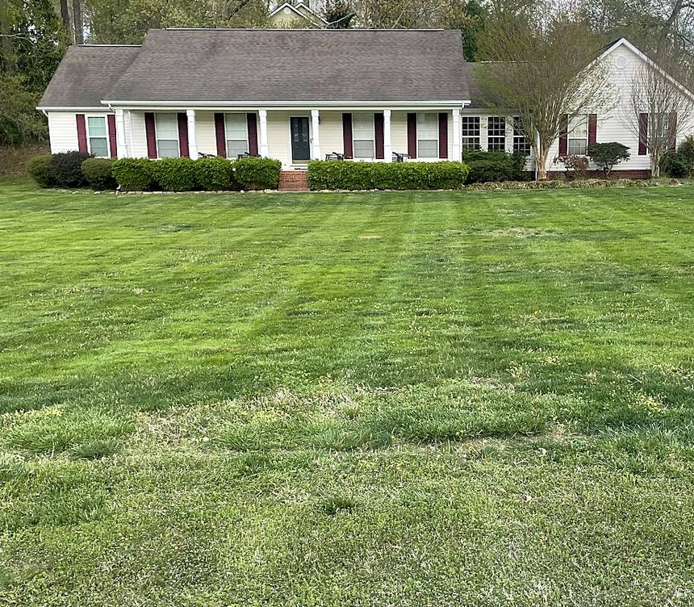
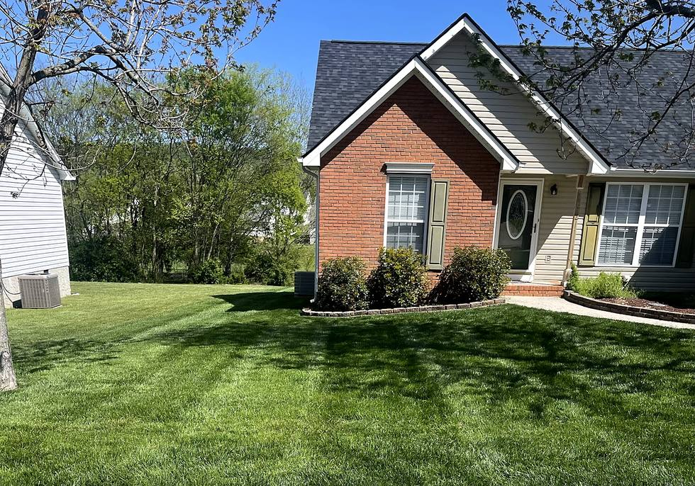
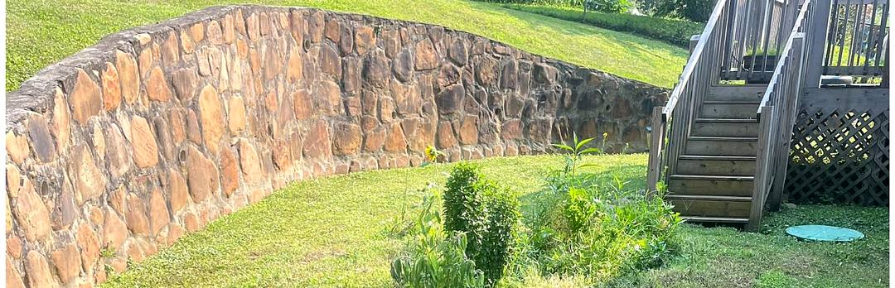

Rossville, Georgia
Your lawn, cut right — and you always know when I’m coming.
Weekly and biweekly mowing, trimming, mulch, cleanups and light landscaping across Catoosa and Walker County. Licensed and insured. Estimates are free.
- 5.0 stars from 42 Google reviews
- Licensed and insured
- Free estimates — no charge to ask
- 8am–8pm, 7 days — call anytime
Why people stay
The hardest part of hiring a lawn guy is knowing he’ll turn up.
So I tell you. If I’m coming, you hear from me. If it’s rained out and I’m not, you hear from me then too. Two different customers wrote that down without being asked:
“He communicates well and always texts to tell us when he will be here or not do to rain or whatever.”Amy Massey · Google review
“If there is ever a time he can not make it he is awesome about letting you know.”steven Catherman · Google review
What I do
Mowing on a schedule, and the jobs around it.
Residential lawns across Rossville, Fort Oglethorpe and the towns nearby. Tell me what the yard needs and I’ll tell you straight whether it’s something I do.
Weekly & biweekly mowing
A set cycle so the lawn never gets away from you. Most yards run every two weeks through the season.
Trimming & edges
String trimming around beds, posts, walls and fence lines, so the cut actually looks finished.
Hedge & shrub trimming
Shaping overgrown hedges and foundation shrubs back to something you'd want to look at.
Mulch installation
Beds cut in clean and mulched. It is the fastest, cheapest change you can make to the front of a house.
Leaf cleanups
Leaves cleared off the lawn and the beds before they mat down and smother what's underneath.
Spring & fall cleanups
The big seasonal reset at either end of the year — beds, edges, overgrowth, the lot.
Brush removal
Overgrowth, weeds and scrub cleared off fence lines, walls and the corners nobody has touched in a while.
Small tree trimming
Small trees cut back and tidied up. Anything big or near a line, I’ll tell you to call a tree service.
Light landscaping
Beds reshaped, plants put in, edges redefined. The jobs that sit between mowing and a full landscape build.
The work
Every photo here is a yard I cut.
No stock pictures of somebody else’s lawn. These are real jobs around Rossville and Fort Oglethorpe.





42 reviews, every one five stars
What the neighbours say.
“I’ve been using [ZRC] for three years now. He does a great job keeping my lawn looking great! I have Bermuda in the front and sides of my home and Fescue in the back. He comes every two weeks which is perfect for my lawn. If you need someone that is dependable and professional taking care of your lawn then choose [ZRC] with ZRC Lawn Service! Also, he has very fair pricing!”
Jim Brewer · Google“We’ve been extremely pleased with the lawn care service we receive from [ZRC]. Since he started working on our yard, the difference has been remarkable. The lawn looks healthier, greener, and much better maintained than ever before. He’s reliable, professional, and takes pride in his work. It’s clear that he pays attention to the details and genuinely care about customer satisfaction.”
Kareena Allen · Google“[ZRC] is hard working and committed to growing his business. He is very reliable and is always here at our house when he says he is going to be. He communicates well and always texts to tell us when he will be here or not do to rain or whatever. Prices are reasonable.”
Amy Massey · Google“ZRC has been cutting my lawn for the last Year. He has been very dependable. If there is ever a time he can not make it he is awesome about letting you know. My lawn looks great after he cuts and weed whack. Great Job [ZRC] keep up the great work.”
steven Catherman · Google“Excellent lawn care service! Always on time, professional, and the yard looks amazing after every visit. The attention to detail really shows. Highly recommend if you want a clean, well-maintained lawn!”
katie leonard · Google5.0
42 Google reviews
Not one of them below five stars.
Where I work
Catoosa and Walker County.
If you’re nearby and not on the list, call and ask anyway — it depends on the day and the route.
- Rossville, GA
- Fort Oglethorpe, GA
- Chickamauga, GA
- Flintstone, GA
- Ringgold, GA
- East Ridge, TN
The quiet half of the year
The mowing stops. The yard doesn’t.
Once the grass slows down there’s still leaf cleanup, hedges to cut back, beds to put right and brush to clear. It’s the time of year to get the jobs done that there was never a free Saturday for.
Same number, same answer: tell me what the yard needs and I’ll tell you what it takes.
Leaf cleanups
Off the lawn and out of the beds.
Fall cleanups
The full seasonal reset.
Hedge trimming
Cut back while they’re dormant.
Brush removal
Fence lines, walls, corners.
Free estimate
Quickest way is to call.
One person answers this phone and it’s me. Tell me the address and roughly what you need and I’ll give you a number — no charge for asking, no obligation either way.
Call or text (423) 443-9507- Monday – Friday8:00am – 8:00pm
- Saturday8:00am – 8:00pm
- Sunday8:00am – 8:00pm
Based in Rossville, GA. Serving Catoosa and Walker County.